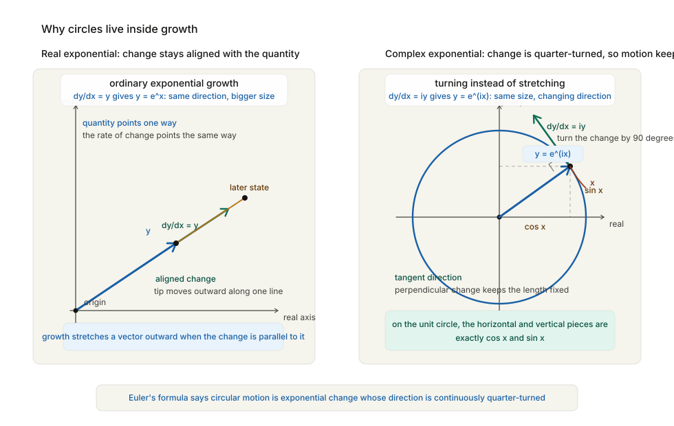

The Number That Should Not Exist
Europe, 1700–1800 CE
In the middle decades of the eighteenth century, mathematicians inherited a new power and a new embarrassment.
The power was calculus. Newton and Leibniz had given Europe a way to calculate motion, area, growth, and change with a precision no previous generation could have imagined. The embarrassment was older. It had been sitting quietly in algebra ever since Cardano and Tartaglia had wrestled with the cubic two centuries earlier. It appeared under a square root sign, and it looked like nonsense:
\[ \sqrt{-1} \]No number, it seemed, could possibly have this property. A positive number squared is positive. A negative number squared is also positive, because minus times minus gives plus. There is no real number whose square is negative. To write √(-1) was to write the mathematical equivalent of “a north point south of here” or “a triangle with four sides.” It was not a difficult object. It was an impossible one.
And yet the impossible object would not go away. It kept appearing in correct calculations. It appeared where no one wanted it and disappeared only after the calculation was done, leaving behind a perfectly sensible real answer. Mathematicians could not ignore it, because ignoring it meant giving up real results. They could not comfortably accept it, because accepting it seemed to require admitting a kind of fiction into the heart of mathematics.
The man who did more than anyone else to settle this standoff was Leonhard Euler. Euler did not invent the square root of minus one. He did something more significant. He treated it as if it deserved to live.
Cardano’s Ghost
We met the problem in Renaissance Italy, when Cardano’s formula for solving cubic equations produced quantities that even Cardano himself regarded with horror. It is worth looking at one example again, because it reveals exactly what made imaginary numbers so unsettling.
Consider the cubic equation:
\[ x^3 = 15x + 4 \]You can check by inspection that x = 4 is a solution, because:
\[ 4^3 = 64 \] \[ 15 \times 4 + 4 = 60 + 4 = 64 \]So this is not a mysterious equation. It has an ordinary, perfectly real answer.
But now apply Cardano’s general method. In modern notation, the formula leads you to:
\[ x = \sqrt[3]{2 + \sqrt{-121}} + \sqrt[3]{2 - \sqrt{-121}} \]The correct answer, x = 4, is somehow hidden inside an expression involving √(-121), which should not mean anything at all.
This is the point where sixteenth-century algebra faltered. Cardano could follow the procedure. He could see that it often worked. He could even, in some cases, manipulate the impossible expressions long enough to arrive at the right result. But he did not know what the expressions were. They seemed like scaffolding erected around a real building and then removed when the job was done: useful during construction, but not part of the final structure.
The temptation, for more cautious mathematicians, was to say that the impossible expressions were merely formal tricks — marks on paper that could sometimes help you get from one real answer to another, but which did not themselves correspond to anything legitimate.
Euler’s instinct was different. If an object keeps appearing in good mathematics, he thought, perhaps the problem is not with the object. Perhaps the problem is with our intuition.
Bombelli’s Gamble
There was, however, an important step between Cardano’s discomfort and Euler’s confidence, and it was taken by an Italian engineer and mathematician named Rafael Bombelli, whose Algebra was published in 1572. Bombelli looked at the impossible expressions that Cardano had treated with alarm and made a practical decision: whether or not anyone could explain them philosophically, they needed rules.
This was a very old mathematical instinct. When the Babylonians needed square roots, they learned procedures for computing them before anyone had a general theory of irrational numbers. When Indian mathematicians needed zero and negatives, they wrote rules first and philosophy later. Bombelli applied the same mentality to √(-1). He began manipulating it systematically.
He wrote down rules that a modern student would recognise immediately:
\[ (a + bi) + (c + di) = (a + c) + (b + d)i \] \[ (a + bi)(c + di) = (ac - bd) + (ad + bc)i \]The first rule is ordinary addition, done component by component. The second is what you get if you multiply out the brackets and remember that:
\[ i^2 = -1 \]At first glance this looks like mere symbol-pushing. But Bombelli’s great virtue was that he pushed the symbols far enough to reveal that they were not arbitrary.
Return to Cardano’s troubling example. We had:
\[ x = \sqrt[3]{2 + \sqrt{-121}} + \sqrt[3]{2 - \sqrt{-121}} \]Since:
\[ \sqrt{-121} = 11i \]this becomes:
\[ x = \sqrt[3]{2 + 11i} + \sqrt[3]{2 - 11i} \]Now notice something extraordinary:
\[ (2 + i)^3 = 2 + 11i \] \[ (2 - i)^3 = 2 - 11i \]So the cube roots are:
\[ \sqrt[3]{2 + 11i} = 2 + i \] \[ \sqrt[3]{2 - 11i} = 2 - i \]and therefore:
\[ x = (2 + i) + (2 - i) = 4 \]The imaginary parts cancel. The real answer emerges intact. Bombelli did not solve every problem surrounding complex numbers. He did not make them philosophically respectable. But he did something indispensable: he showed that they could be handled coherently enough to produce correct results. He turned a scandal into a method. By the time Euler inherited the problem, the impossible number was no longer merely a ghost in Cardano’s formula. It was a working mathematical object, still mistrusted but no longer mute.
Euler, Everywhere
Euler was born in Basel in 1707, the son of a Protestant minister who had expected his boy to enter the clergy. Instead, the boy fell under the influence of Johann Bernoulli, the greatest living mathematical teacher of the time and one of the heirs of Leibniz’s calculus. Bernoulli quickly recognised what he had on his hands. Euler was not merely talented. He was one of those rare people for whom mathematics seems less like a learned skill than like a native language.
He was invited to the Academy of Sciences in St Petersburg while still in his twenties. He worked later in Berlin under Frederick the Great. He returned again to St Petersburg. He wrote on everything. Fluid mechanics. Number theory. Mechanics. Astronomy. Ship masts. Artillery. Music theory. Cartography. Infinite series. Differential equations. Optics. The motion of the moon. The shape of a vibrating string. The orbits of planets.
His productivity is difficult to describe without sounding as if one has made a mistake. He wrote hundreds of papers and books, filling tens of thousands of pages. He lost sight in one eye while still relatively young, probably through illness aggravated by overwork. Later he lost the other eye almost completely. He kept working, dictating mathematics at astonishing speed to assistants and family members, carrying whole derivations in his head.
Euler did not merely use calculus. He domesticated it. He standardised notation, extended techniques, turned special tricks into general methods, and made mathematics easier for everyone who came after him. The symbols that now feel like the native furniture of mathematical thought — f(x) for a function, e for the base of the natural logarithm, i for the square root of minus one, Σ for a sum — owe their widespread use largely to him.
This is important to understand because Euler’s genius was not only in finding new results. It was in making mathematics thinkable. He gave later generations a language in which hard ideas could be handled cleanly, and one of the hardest ideas he touched was the impossible number under the root sign.
What an Imaginary Number Actually Is
Let us be candid about the name before we do anything else. “Imaginary number” is a terrible name. It suggests something unreal or fake, as if the number were a daydream or a cheat. The phrase was coined partly as an insult. René Descartes, in the seventeenth century, used it to distinguish these suspect quantities from the “real” roots of equations. The label stuck, and mathematics has been living with the consequences ever since.
The simplest way to define the imaginary unit is this:
\[ i = \sqrt{-1} \]which means:
\[ i^2 = -1 \]Once you accept this definition, the arithmetic proceeds in exactly the ordinary way. For example:
\[ i^3 = i^2 \times i = -i \] \[ i^4 = i^2 \times i^2 = 1 \]and the pattern repeats from there. Any number of the form
\[ a + bi \]where a and b are ordinary real numbers, is called a complex number. If b = 0, the complex number is just an ordinary real number. The real numbers, in other words, sit inside the complex numbers as a special case.
This alone is already a clue that we are not adding a fantasy world on top of mathematics. We are extending the number system in the same spirit that earlier mathematicians extended it before. Negative numbers once looked absurd because there are no negative sheep. Irrational numbers once looked disturbing because they could not be written as neat ratios. Zero once looked suspicious because how can “nothing” be a number? Each extension felt impossible until the rules were made clear. Then the impossibility dissolved. The complex numbers are another such extension. They are what you get when you insist that equations should not fail merely because your current number system is too small to contain their answers.
Take the equation:
\[ x^2 + 1 = 0 \]Over the real numbers, this equation has no solution. Over the complex numbers, it has two:
\[ x = i \] \[ x = -i \]The point is not that we have played a naming game. The point is that by allowing this extension, whole families of equations become solvable in a more complete and systematic way. Algebra stops hitting dead ends quite so often. Much later, mathematicians would discover an elegant geometric interpretation of complex numbers. You can picture a + bi as a point in a plane: a steps along the horizontal axis, b steps along a vertical axis. In that picture, multiplying by i is not nonsense at all. It is a quarter-turn — a rotation by ninety degrees.
![A complex-plane explanatory diagram. In the main panel, the real and imaginary axes cross at the origin, a point z = a + bi is shown with projections to the axes, and a second point iz = -b + ai is shown after a ninety-degree counterclockwise rotation. A curved arrow labeled multiply by i marks the quarter-turn, and the unit circle markers 1, i, -1, and -i appear around the origin. Two small inset panels summarize the special case x squared plus 1 equals 0 with roots at i and minus i, and the coordinate rule that (a, b) becomes (-b, a).](images/complex_i_quarter_turn.svg)
You can see it in the algebra:
\[ i(a + bi) = ai + bi^2 = -b + ai \]The point (a, b) becomes the point (-b, a), which is exactly what a ninety-degree rotation does.
This geometric picture was not fully Euler’s achievement; it would be clarified by others in the generations after him. But it reveals the deeper truth beautifully. The square root of minus one is not an absurdity. It is the algebraic signature of rotation.
And as soon as you know that, its connection to circles, waves, and oscillation begins to look much less mysterious.
The Formula That Should Be Impossible
Euler’s most famous contribution to this story is a single equation. It is short enough to write on a postcard and deep enough to occupy mathematicians for a lifetime:
\[ e^{i\theta} = \cos(\theta) + i \sin(\theta) \]This is Euler’s formula. It is one of the most astonishing bridges ever built in mathematics. On the left is the exponential function, the mathematics of growth and decay. On the right are sine and cosine, the mathematics of circles, waves, and oscillation. Between them stands i, the square root of minus one, acting as the hinge. To appreciate why this is so surprising, recall what these functions seemed to belong to before Euler linked them. Exponentials arise in compound interest, population growth, radioactive decay, and any process that changes proportionally to its current size. Sine and cosine arise in geometry, astronomy, music, and the description of periodic motion. They look like inhabitants of different mathematical countries. Euler showed that they are, in a profound sense, the same thing.
Here is how the connection appears. By Euler’s time, mathematicians knew the power series expansions:
\[ e^x = 1 + x + x^2/2! + x^3/3! + x^4/4! + \dots \] \[ \cos(x) = 1 - x^2/2! + x^4/4! - x^6/6! + \dots \] \[ \sin(x) = x - x^3/3! + x^5/5! - x^7/7! + \dots \]Now replace x in the exponential series with iθ:
\[ e^{i\theta} = 1 + i\theta + (i\theta)^2/2! + (i\theta)^3/3! + (i\theta)^4/4! + \dots \]Because powers of i cycle:
i² = -1
i³ = -i
i⁴ = 1the series becomes:
\[ e^{i\theta} = 1 + i\theta - \theta^2/2! - i\theta^3/3! + \theta^4/4! + i\theta^5/5! - \dots \]Now group the real terms and the imaginary terms separately:
\[ e^{i\theta} = (1 - \theta^2/2! + \theta^4/4! - \dots) + i(\theta - \theta^3/3! + \theta^5/5! - \dots) \]But those are exactly the series for cosine and sine:
\[ e^{i\theta} = \cos(\theta) + i \sin(\theta) \]Nothing mystical has happened. The formula falls out of the series with relentless calm. And yet the result still feels miraculous, because it says that continuous growth, rotation, and oscillation are all different expressions of one underlying structure.
Set θ = π, and something even stranger happens:
\[ e^{i\pi} = \cos(\pi) + i \sin(\pi) = -1 + 0i = -1 \]So:
\[ e^{i\pi} + 1 = 0 \]This identity ties together five of the most fundamental constants in mathematics:
\[ 0, 1, e, i, \pi \]Zero, the additive identity. One, the multiplicative identity. e, the constant of continuous growth. i, the square root of minus one. π, the constant of the circle. They meet in a relation so compact that it looks like a magic trick. It is not a magic trick. It is a sign that mathematics, far below the surface, is more unified than our first intuitions suggest.
The Circle of All Solutions
Euler’s formula did more than make one beautiful identity possible. It changed how mathematicians thought about equations, because it made the complex plane look less like an emergency annex to algebra and more like its natural setting.
Take the equation:
\[ x^4 = 1 \]Over the real numbers, this looks almost trivial. There are only two real solutions:
x = 1
x = -1But a fourth-degree equation ought, in some broad sense, to have four roots. Where are the missing two?
The complex numbers reveal them immediately. Using Euler’s formula, any point on the unit circle can be written as:
\[ e^{i\theta} \]and raising it to the fourth power gives:
\[ \left(e^{i\theta}\right)^4 = e^{4i\theta} \]So the equation x⁴ = 1 is really asking: for which angles θ does
\[ e^{4i\theta} = 1? \]That happens whenever 4θ is a whole multiple of 2π. So:
\[ 4\theta = 0, 2\pi, 4\pi, 6\pi, \dots \]and the distinct solutions between 0 and 2π are:
\[ \theta = 0, \pi/2, \pi, 3\pi/2 \]which correspond to:
\[ 1, i, -1, -i \]The four roots of x⁴ = 1 are not hiding in some inaccessible algebraic darkness. They are the four quarter-turns around the circle.
This was a revelation. Complex numbers did not merely rescue awkward calculations. They organised the solutions of equations geometrically. The roots of:
\[ x^n = 1 \]turn out to be evenly spaced points around the unit circle, like the vertices of a regular polygon. The equation x³ = 1 gives a triangle. x⁴ = 1 gives a square. x⁶ = 1 gives a hexagon. Algebra and geometry, once again, were not separate worlds at all.
This mattered far beyond the pleasure of seeing a clean picture. It suggested that the complex numbers were the natural home of algebra in the same way that the plane is the natural home of Euclidean geometry. If you stayed in the real numbers, equations kept appearing to have “missing” roots. If you moved into the complex plane, the landscape became far more orderly.
Much later, this insight would be captured in one of the great theorems of mathematics: every non-constant polynomial equation has a solution in the complex numbers. That theorem would be proved rigorously by Gauss in the next generation. Euler did not finish that story. But he helped make it imaginable by showing that the strange new numbers were not pathological exceptions. They were part of a larger and remarkably elegant whole.
Why Circles Live Inside Growth
If Euler’s formula feels beautiful but mysterious, there is a more physical way to think about it. Exponential growth is what happens when the direction of change is always aligned with the quantity itself. If your money grows at interest, the more money you have, the more quickly it increases. The change points in the same direction as the existing quantity. But what if the change were always turned ninety degrees from the quantity instead of aligned with it? Then the quantity would not keep getting bigger in a straight line. It would keep turning. Its tip would trace a circle.

That is what multiplication by i means in the geometric picture: a quarter-turn. So the equation
dy/dx = iydoes not describe ordinary growth. It describes continuous turning. The solution is:
y = e^(ix)and Euler’s formula tells you that this turning motion is exactly sine and cosine in disguise.
This matters because the physical world is full of turning and oscillation. A plucked string vibrates. A pendulum swings. A sound wave alternates between compression and rarefaction. Light oscillates. Electric current in an alternating circuit reverses direction rhythmically. Whenever a system cycles, complex numbers and Euler’s formula are waiting nearby.
This is the point where the so-called imaginary number stops looking ornamental and starts looking inevitable. If the world contains rotation, phase, and periodic motion — and it does, everywhere — then a number system that naturally encodes quarter-turns is not a luxury. It is an extraordinary convenience.
Much later, electrical engineers would use complex numbers to describe alternating current so routinely that entire power grids could be analysed with them. Physicists would use them to write the equations of quantum mechanics. Signal processing would use them to analyse sound, images, and radio waves. The square root of minus one, which began as an algebraic scandal, would become one of the standard tools for describing reality.
Euler did not know all of those applications. What he knew was that the mathematics held together with suspicious elegance. That was enough for him to trust it.
The Sum of the Inverse Squares
Euler’s boldness with imaginary numbers was part of a larger habit. He was willing to see patterns first and demand rigorous permission later.
One of the clearest examples is the problem that had defeated the best mathematicians in Europe for decades:
1 + 1/4 + 1/9 + 1/16 + 1/25 + ...This is the sum of the reciprocals of the squares:
1/1² + 1/2² + 1/3² + 1/4² + ...It is called the Basel problem because it was posed by the Bernoullis of Basel, who could not solve it.
The series clearly converges — the terms get smaller and smaller — but converging is not the same thing as knowing the exact sum. Was it some ugly constant with no name? A rational number? Something involving logarithms?
Euler found the answer in 1735:
1 + 1/4 + 1/9 + 1/16 + ... = π²/6This was startling. Why should a series built from the reciprocals of whole-number squares produce π, the constant of circles? Euler’s method, by later standards, was not fully rigorous. He treated the sine function as if it were an infinite polynomial with roots at ±π, ±2π, ±3π, and so on, then compared coefficients the way one would for an ordinary polynomial. Modern analysts would insist on many more careful justifications. But the answer was correct, and the path to it revealed something profound: seemingly unrelated regions of mathematics were once again secretly connected. Numbers led to π. Algebra led to geometry. Infinite series led to exact constants.
This is a recurring theme of the eighteenth century. Mathematics was beginning to outrun the practical problems that had given birth to it. Mathematicians were following formal patterns because the patterns were there — because they were beautiful, suggestive, irresistible. And again and again, what looked like intellectual wandering turned out to be reconnaissance.
Euler’s work on infinite series would later feed directly into Fourier’s work on heat, into the analysis of waves, into complex function theory, into physics. He was not merely solving a puzzle for amusement. He was probing the structure of analysis at a depth no one before him had reached.
Even when he lacked full rigour, he had an uncanny sense for where the truth was hiding.
The Machine Called a Function
Another reason Euler sits so naturally after Newton and Leibniz is that he helped clarify what calculus is actually about.
For the creators of calculus, the central objects had often been curves, motions, and geometric quantities. Euler pushed the subject toward the more general idea of a function, and that shift quietly changed what mathematics was allowed to talk about.
A function is, at bottom, a rule that takes an input and produces an output. If you tell me:
f(x) = x²then I know that the function sends 2 to 4, 3 to 9, 10 to 100, and so on. If you tell me:
f(x) = sin(x)I know that the output oscillates as the input changes.
This looks elementary now, but the shift was profound. It allowed mathematicians to stop thinking only about specific curves or quantities and to begin thinking about any dependence of one variable on another as a legitimate mathematical object. A temperature varying with time is a function. The height of a wave across a string is a function. The density of air in the atmosphere is a function of altitude. The gravitational pull of a planet is a function of distance.
This made mathematics much more flexible. Once a physical system could be described as a function, calculus could act on it. Differentiate it. Integrate it. Approximate it by a series. Compare one function to another. Ask whether it is continuous, smooth, periodic, bounded.
Euler’s notation f(x) helped stabilise this way of thinking, but the notation mattered because the concept mattered. Mathematics was becoming less a study of particular shapes and more a study of general forms of dependence.
This was essential for everything that followed. Without the function concept, there is no modern analysis. Without modern analysis, there is no Fourier theory, no field equations, no quantum mechanics, no statistics in its mature form. There is only a much smaller mathematics, tied closely to geometry and arithmetic and unable to express the full range of the changing world.
Euler did not create all of this alone. No one does. But he helped make the shift feel natural.
The Risk of Bold Mathematics
There is a temptation, when telling the story of Euler, to make him sound infallible. He was not. He was sometimes too bold. He manipulated divergent series in ways that would alarm a careful modern analyst. He treated infinite expressions with a confidence that later mathematicians would consider reckless. He often had the right answer before he had the right justification, and sometimes he had neither.
This matters because it reveals something truthful about mathematical progress. The path to a rigorous subject is rarely itself rigorous. People guess, overreach, test patterns, make analogies, get seduced by formal resemblance, and then later generations come in to sort the valid insights from the invalid ones.
Euler’s notorious willingness to assign values to divergent series is a case in point. The series
1 - 1 + 1 - 1 + ...does not converge in the ordinary sense. Its partial sums bounce:
1, 0, 1, 0, 1, 0, ...Yet Euler and others were willing to treat it, under certain summation methods, as if it had a meaningful value. Modern mathematics eventually showed that there are precise contexts in which such assignments can be made consistently and fruitfully. What looked like irresponsibility was, in some cases, an early glimpse of a richer theory.
This does not mean every bold guess deserves respect. Many bold guesses are simply wrong. What made Euler extraordinary was not that he guessed wildly. It was that his boldness was usually guided by deep structural intuition. He was willing to trust patterns that others were too cautious to touch, and he was right often enough to pull mathematics forward.
The eighteenth century needed exactly this sort of person. Calculus existed, but its foundations were still unsettled. Complex numbers existed, but their meaning was obscure. Infinite series existed, but their status was uncertain. Someone had to act as if these things could be made coherent. Euler did.
Why the Useless Kept Becoming Useful
By this point my central argument has changed shape. In the early chapters, mathematics arose directly from pressure: grain had to be counted, land had to be measured, eclipses had to be predicted, cannon had to be aimed. The practical problem came first, and the mathematics followed.
In Euler’s world, something stranger was happening. The practical problems were still there — navigation, artillery, astronomy, engineering — but mathematicians had built enough machinery that they could begin exploring beyond immediate necessity. They could follow internal questions. What happens if we allow √(-1)? What if we sum an infinite series? What if a function is not given by a neat algebraic formula? What if the same symbol system can handle growth and rotation at once? To a suspicious observer, this might have looked like decadence: brilliant minds drifting away from reality into formal games. And yet the games kept returning with treasure.
Complex numbers, born from algebraic discomfort, turned out to be the natural language of waves and alternating motion. Infinite series, pursued partly for their own fascination, turned out to be the natural language of heat, sound, and light. The function concept, abstract and general, turned out to be exactly what science needed in order to describe fields, distributions, and changing systems.
This is the first point in the history of mathematics where the reader is almost forced to ask the philosophical question directly: why should this work? Why should a number invented to rescue awkward algebraic expressions later become indispensable to electrical engineering? Why should the exponential function and the circle be secretly related? Why should mathematics developed with no application in sight later fit the physical world so precisely that engineers build machines from it and physicists treat it as the grammar of reality?
Euler did not answer that question philosophically. He answered it the way working mathematicians usually do: by pushing onward. If the mathematics is coherent, if it yields correct results, if different ideas unexpectedly reinforce one another, then you trust that there is something real there, even if you do not yet have words for why.
That trust would shape the next two centuries.
What Euler Changed
It is difficult to summarise Euler without either understating him or sounding absurd.
He did not merely solve problems. He changed the scale on which mathematics could be done. He absorbed the calculus of Newton and Leibniz and made it a common instrument. He accepted complex numbers as legitimate tools. He linked exponentials to trigonometry. He solved the Basel problem. He helped stabilise the function concept. He standardised notation so successfully that the mathematical world still thinks in his symbols.
He also, quietly, changed the emotional posture of mathematics. Before Euler, many of the strange objects of analysis carried an air of apology. After Euler, they carried momentum. They were still controversial, still not fully justified, still in some cases philosophically troubling — but they were in play. A young mathematician after Euler no longer had to begin by asking whether these objects were respectable enough to touch. Euler had touched them already and brought back results.
This matters because mathematics grows not only by proof but by permission. People need examples of how far they are allowed to think. Euler gave them those examples.
By the end of the eighteenth century, mathematics had become something larger than anyone in Babylon, Egypt, Greece, or even Newtonian England could have predicted. It was no longer merely the study of number, shape, motion, or quantity. It was becoming the study of structure itself — of patterns so deep that they could appear first as intellectual curiosities and only later reveal their power over the physical world.
Euler stands at the hinge of that transformation.
He made the unreal calculable.
And once the unreal could be calculated, it turned out to describe the real world with alarming accuracy.
In the next chapter, certainty begins to loosen its grip. Mathematicians, merchants, gamblers, and statesmen all wanted to know how to reason when outcomes were not fixed but uncertain. The new problem was not motion or number, but chance itself — and the mathematics it produced would prove just as powerful, and just as unsettling, as calculus had been.